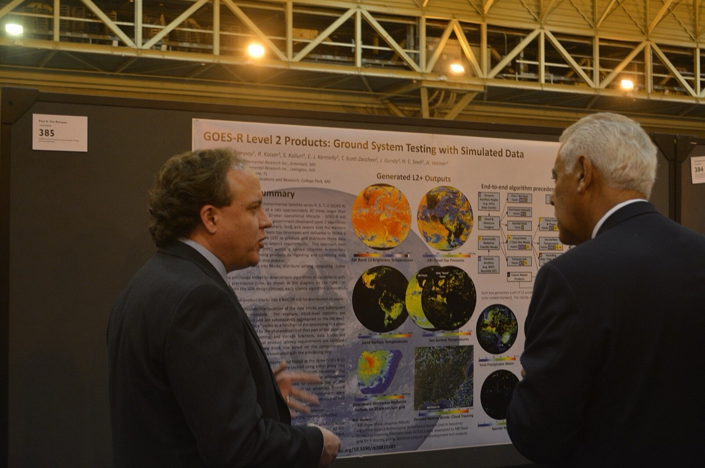

ปัญญาประดิษฐ์และวิทยาการข้อมูล
แอปพลิเคชันที่ใช้ AI ระบบอัจฉริยะ และการวิเคราะห์ข้อมูล

เชิญส่งบทความวิจัยด้านวิศวกรรมคอมพิวเตอร์ ประกาศฉบับนี้เป็นร่างแรกและจะอัปเดตในสัปดาห์ที่ 3
[ธีมของงาน]
ธีมบอกทิศทางกว้าง ๆ ส่วนขอบเขตบอกว่าบทความแบบไหนเข้าข่าย
แอปพลิเคชันที่ใช้ AI ระบบอัจฉริยะ และการวิเคราะห์ข้อมูล
การพัฒนาซอฟต์แวร์ คุณภาพซอฟต์แวร์ และแอปพลิเคชัน
ระบบเครือข่าย การป้องกันภัย และความปลอดภัยของข้อมูล
ไมโครคอนโทรลเลอร์ เซนเซอร์ และอุปกรณ์เชื่อมต่อ
การออกแบบประสบการณ์ผู้ใช้และการประเมินการใช้งาน
ระบบอัตโนมัติและระบบสนับสนุนการตัดสินใจ
เวลานำเสนอ รอประกาศ
ขนาดโปสเตอร์ รอประกาศ